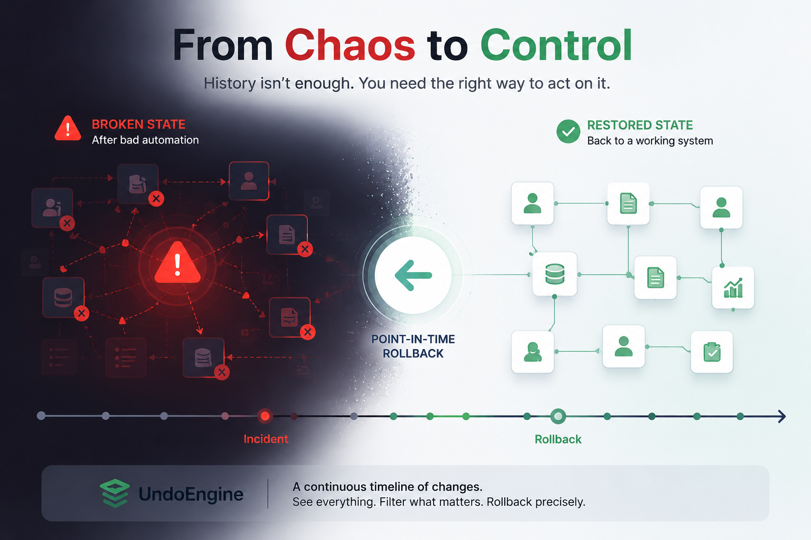

In Salesforce, data history becomes critical when something goes wrong and the system needs to be restored to a working state as quickly as possible.
A typical incident looks like this: automation updates thousands of records, a logic error changes the wrong data, and business processes start to break. This is where the limitations of traditional approaches become visible.
The system periodically saves its state, and if something goes wrong, you restore one of these points in time. But incidents never line up with the snapshot schedule. Restoring a snapshot in full means losing the valid changes made after it. Restoring only what broke requires comparing the snapshot with the current state, reading large volumes of data through the API, and spending time and limits on it.
Strength: disaster recovery.
If every change is recorded, in theory any state can be reconstructed. In practice, every change takes up a separate record in storage: 10 changes to one account produce 10 records and about 20 KB. History grows with the number of updates, so you have to limit what to track, how long to keep it and how much it costs. During an incident, such a mass of records is hard to filter and use for rollback.
Strength: auditing.
UndoEngine builds a continuous, compact history of changes inside Salesforce. Each record gets one log of about 2 KB, regardless of how many times it changes. Storage grows with the number of tracked records, not with the number of updates: 1 million records take roughly 2 GB.
You can work with this history during an incident:
In the demo, rolling back 4,000 records across 20 fields takes about 30 seconds.
The full change history is available for auditing as well.
Strength: fast, precise data recovery.